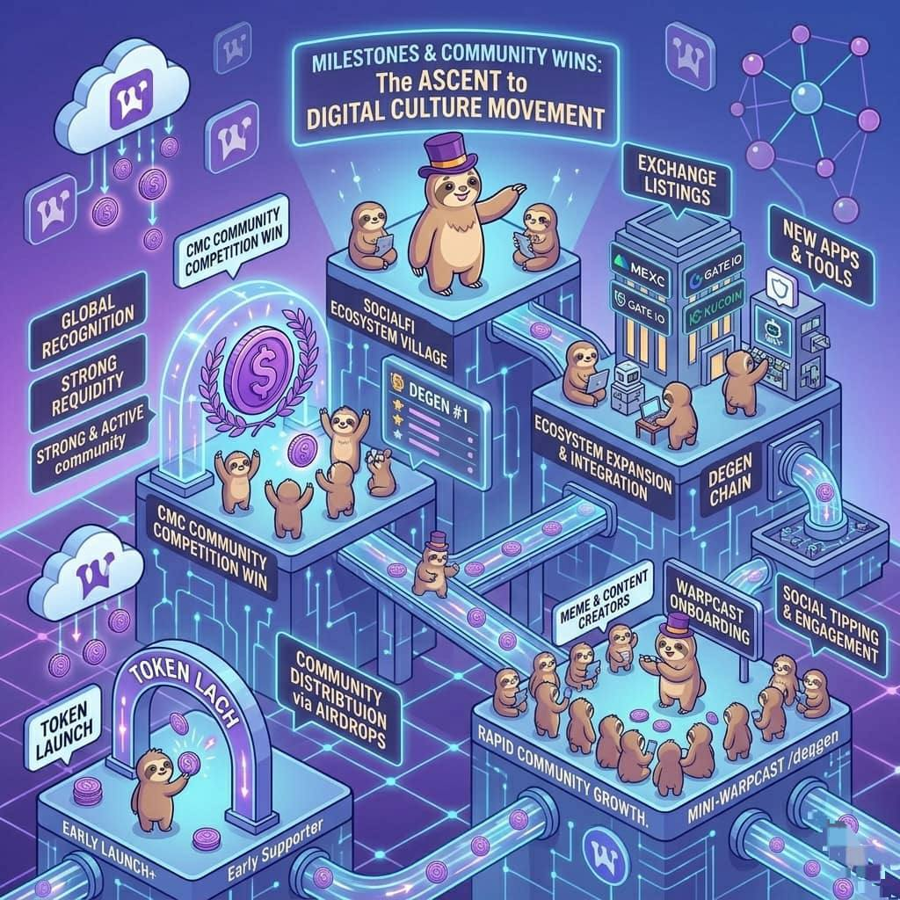

Milestones & Wins
Community achievements like competitions, listings, and growth.
The journey of Degen (DEGEN) has been shaped by several important milestones and achievements.
These milestones show how the project grew from a small experiment into a well known community ecosystem.
Each milestone represents progress, recognition, and growth for the Degen community.
One of the first major milestones was the launch of the DEGEN token in early 2024.
The token was introduced as a reward system for active users in the Farcaster ecosystem.
Instead of launching through a typical token sale, DEGEN was distributed mainly through airdrops to community members.
This unique approach helped:
- attract early supporters
- reward active contributors
- build a strong community foundation
The launch marked the beginning of the Degen social reward economy.
Another important milestone was the rapid expansion of the Degen community.
Many users joined the ecosystem through platforms like Warpcast.
As the community grew:
- more creators started posting content
- tipping became more common
- developers began building tools around the token
This growth helped transform DEGEN from a small community experiment into a recognized crypto culture movement.
One of the biggest achievements for the community was winning a major competition hosted by CoinMarketCap.
In this competition, different crypto communities competed to show:
- engagement
- activity
- support from users
The DEGEN community won the competition, demonstrating how strong and active the ecosystem had become.
This win brought:
- global visibility
- recognition from the wider crypto industry
- new users discovering the project
It showed that the strength of DEGEN comes from its passionate community.
Another major milestone was the token being listed on multiple crypto exchanges.
Listings allow traders and investors to buy and sell the token more easily.
As $DEGEN gained popularity, several exchanges added trading pairs for the token.
These listings helped:
- increase market liquidity
- attract new investors
- expand global access to the token
Exchange listings are often seen as a sign that a project is gaining traction in the market.
As the project grew, developers began building tools that supported the ecosystem.
These included:
- social tipping apps
- analytics dashboards
- trading tools
- community bots
These tools helped make the ecosystem more useful and easier to interact with.
They also encouraged developers to experiment and innovate around the token.
Another major milestone was the development of Degen Chain.
This blockchain was designed to support:
- fast transactions
- social applications
- gaming and DeFi experiments
By launching its own chain, the ecosystem moved from being just a social token to becoming a full blockchain ecosystem.
Beyond technology and trading, DEGEN achieved something unique: cultural influence in crypto communities.
Degen project became known for:
- strong meme culture
- community creativity
- experimental social finance ideas
Many users began to see DEGEN as more than a token a digital culture movement.
